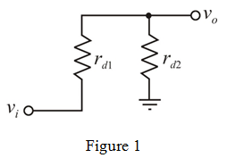
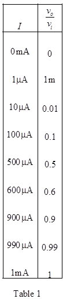

From the circuit shown in Figure 1, the current flowing through diode  is
is  .
.
The current flowing through diode  is .
is .
The Internal resistance of Diode1 is,
The internal resistance of Diode 2 is,
Refer to Figure P4.48 in the text book.
For small signal analysis current source acts as an open circuit and capacitors acts an short circuit.
The Small-signal equivalent circuit is shown in Figure 1.

Apply potential divider rule.
…… (1)
Thus, the small-signal voltage gain of the given circuit is: .
From the circuit shown in Figure 1, the current flowing through diode is .
The current flowing through diode is .
The Internal resistance of Diode1 is,
The internal resistance of Diode 2 is,
Calculate the voltage gain.
Substitute for and for in equation (1)
Thus, the voltage gain of the circuit is .
For  , calculate the voltage gain.
, calculate the voltage gain.
Substitute 0 mA for  in equation.
in equation.

For , calculate the voltage gain.
Substitute for  in equation.
in equation.
For , calculate the voltage gain.
For , calculate the voltage gain.
For  , calculate the voltage gain.
, calculate the voltage gain.
For , calculate the voltage gain.
For , calculate the voltage gain.
For , calculate the voltage gain.
For , calculate the voltage gain.
Tabulate the gain at different currents as shown in Table 1.

Therefore , for different values of current gain is tabulated.